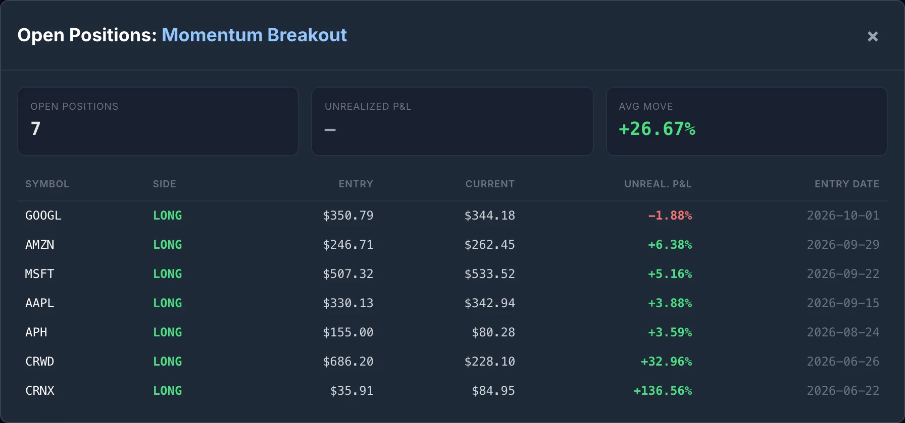
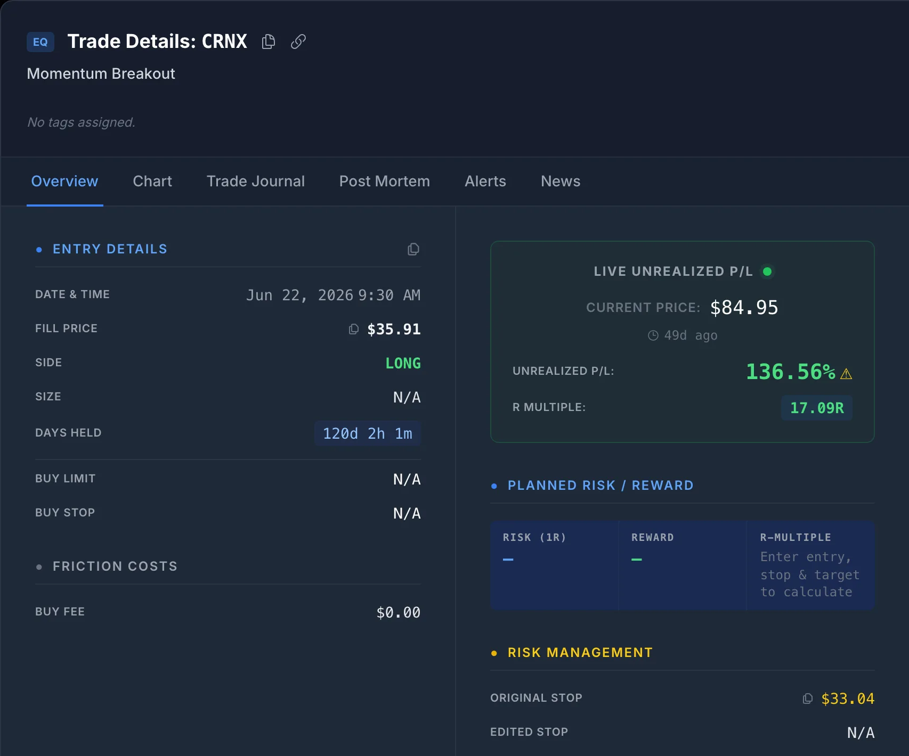

1. Survivorship Bias: The Stocks That Are Not in Your List
The most common way to build a stock backtest is to take an index you know, say the S&P 500 or the Nasdaq 100, download its current members and run the strategy over the last ten years. The problem is the word current. Today's members are the companies that grew into the index or stayed in it. The ones that were dropped, went bankrupt or were acquired along the way are not on the list, so the strategy never gets a chance to buy them.
The effect is larger than most traders expect. Using a point-in-time membership history of the S&P 500 (the list of members as it stood on each date, not as it stands today), with June 1, 2026 as the latest verified date in the dataset:
| S&P 500 tickers on | Members | Still in on June 1, 2026 | Not in it |
|---|---|---|---|
| January 1, 2016 | 502 | 329 | 173 (34%) |
| January 1, 2006 | 497 | 235 | 262 (53%) |
These are matched by ticker, so a company that only changed its symbol counts as not in the index, which overstates the turnover a little. So does a company that was moved down to a smaller index and still trades. It does not change the conclusion. A ten-year test on today's S&P 500 is missing about a third of the stocks you could actually have bought ten years ago, and a twenty-year test is missing about half of them.
It usually flatters the results, because the missing companies include the ones that collapsed. Not always, though. Takeover targets also leave the index, and they often leave on a big up day (see section 3). Either way the test is answering the wrong question. It tells you how the strategy would have done on a list of companies you could only have picked with hindsight.
The check: build the universe from point-in-time membership, and use a data source that still has bars for tickers that no longer trade. If you hand-pick symbols, write down why each one is on the list and whether you could have known that at the start of the test.
2. Stock Splits: Same Company, Two Price Scales
When NVIDIA split 10-for-1 in June 2024, it closed at $1,208.88 on Friday, June 7 and opened at $120.37 on Monday, June 10. Nobody lost 90%. Each share became ten shares worth a tenth as much. But raw price data, the prices as they actually traded, shows a 90% drop over a weekend.
Data vendors fix this with split-adjusted prices. Every bar before the split is divided by the split ratio, so NVIDIA's June 7 close shows as $120.89 and the chart is continuous. For the price series a backtest runs on, split-adjusted is what you want. The trouble starts when two price scales meet:
- A stop or entry recorded in raw prices, checked against adjusted bars (or the other way round). This is the classic live-trading version, and the worked example below.
- A cached price series that straddles a new split. If you downloaded adjusted bars last month and append new ones today, the old ones are still on the pre-split scale. The series now has a cliff in it that never happened.
- A journal entry at your real fill price, compared with today's adjusted chart. Your entry at $686 next to a chart that now reads $228 looks like a typo.
One more thing that catches people out: split-adjusted is not total-return adjusted. Most split-adjusted feeds, Polygon's included, do not add dividends back. A backtest on them measures price return, which understates high-dividend stocks against growth stocks.
Worked example: CrowdStrike's 4-for-1, July 2026
CrowdStrike (CRWD) split 4-for-1 effective July 2, 2026. It closed at $772.74 on July 1 and opened at $191.26 on July 2. Take a long position entered at the June 26 open of $686.20 with a fixed 8% stop at $631.30, and compare a system that checks the stop against raw bars without knowing about the split with one that does.
| CRWD long, entry $686.20, stop $631.30 | Split-blind | Split-aware |
|---|---|---|
| July 2 low | $190.61, under the $631.30 stop | $190.61 × 4 = $762.44 on the entry basis, 21% above the stop |
| What happens | Stopped out at the $191.26 open | Position held |
| Recorded result | −72.1%, −9.0R | Still open on Oct 19: $228.10 × 4 = $912.40, +33.0%, +4.1R |
The split-blind version does not just get one trade wrong. It books a −9R loss that never happened, which wrecks the strategy's drawdown, expectancy and profit factor, and it exits a position that went on to gain a third. Any strategy that holds stocks for weeks at a time will run into one sooner or later. Amphenol (APH) split 2-for-1 on September 3, 2026, for example: a position entered at $155.00 on August 24 is up 3.6% at Monday's $80.28 close, not down 48%.
The check: keep the entry price as it was actually filled, and convert each later bar to the entry's basis with the cumulative split factor since entry before comparing it with the stop or computing a return. Rebuild cached adjusted series from scratch, never append across a split.
3. Cash Takeovers: The Stock That Stops Moving
When a company agrees to be bought for cash, its share price jumps most of the way to the offer and then barely moves until the deal closes. The only thing left to trade is the chance that the deal falls through.
Crinetics Pharmaceuticals (CRNX) shows what that pattern looks like in the data. It closed at $42.03 on July 6, 2026 and opened at $83.58 the next morning, up 99%. In the 40 sessions from the jump to its last bar, every close landed between $83.49 and $84.95. Its median daily range fell from 4.9% in the 20 sessions before the jump to 0.18% after it. The last bar was August 31. Polygon lists the ticker as delisted on September 2.
For a long entered before the announcement, that is a windfall. A position bought at the June 22 open of $35.91 is up 137% at the last close. But a few things go wrong around it:
- The stop will never be hit. It sits under a pre-deal price the stock will not see again. Price-based exits have nothing to act on, so the position sits there tying up capital until the deal closes.
- Anything measuring volatility is measuring a deal spread. A 0.18% daily range is not a quiet stock. It is a stock whose price is now set by the deal terms and the closing date.
- After the close, the ticker is gone. A backtest built from today's symbol list never contains CRNX at all, so a strategy that would have caught this 99% day gets no credit for it. This is survivorship bias working against you.
The check: look for a large one-day move followed by a range that collapses and closes held in a narrow band. When you find one, stop treating the position as a chart trade. Read the deal terms and book the exit at the settlement price when it closes.
4. Delistings: There Is No Next Bar
Every exit rule in a backtest assumes there will be another bar to act on. After a delisting there is not. A cash deal closes, a merger completes, or an exchange removes a company that no longer meets its rules, and the price history simply ends.
- An open position freezes. Its last price is marked forever, so the equity curve shows a flat line where the position actually turned into cash or, after a bankruptcy, close to nothing.
- A signal on the last session cannot fill. A strategy that signals after the close and enters at the next open will generate entries for a ticker that will never open again. A backtest that fills them anyway has invented a trade.
- The loss is silently missing. If bankrupt companies drop out of your data, every position held into a bankruptcy disappears from the record. That is survivorship bias inside a single position.
The check: after a few sessions with no bars, look up whether the ticker was delisted rather than assuming a data gap. Cancel entries that could never have filled, and close held positions at the settlement or last tradeable price instead of leaving them open.
What SignalDeck Does About Each One
SignalDeck has two places where this matters: the backtester, which replays history, and the scanner's live strategies, which run a strategy forward one session at a time. The two handle these events differently and have different limits.
In the backtester
- Stock bars are split-adjusted, so a split that is already in the data does not show up as a crash.
- Cached price history is rebuilt from scratch once it is 30 days old. Until then, new bars are appended to the cached series, so for up to 30 days after a split a cached series can mix the two scales. If a symbol you are testing split in the last month, treat results around the split date with suspicion.
- Returns are price returns. Dividends are not added back.
- It tests the symbols you choose. There is no point-in-time universe in the backtester yet, so if you test a list of today's large caps, survivorship bias is in the result. The walk-forward and Monte Carlo checks guard against overfitting, not against a biased symbol list.
In live strategies
A live strategy cannot suffer from survivorship bias, because it does not know the future: it scans the universe as it exists each day. That is the best argument for forward-testing a backtest before you trust it. But a forward record is only honest if splits, takeovers and delistings are handled while positions are open, which is what the last two releases changed.
- Splits (v1.0.129). The entry price and stored stops are never rewritten. Stops are checked against as-traded bars on each bar's own split basis, and return and R are reported on the entry basis, exactly as in the CrowdStrike example above.
- Possible cash deals (v1.0.130). A position is flagged when its stock moves 15% or more in one session and then, for at least three sessions, its median daily range is 1% or less and under 0.35× what it was before the jump, with every close within 3% of the median close.
- Delistings (v1.0.130). When a held symbol has had no bars for two trading days, SignalDeck checks Polygon's ticker reference and flags the position if the ticker is reported delisted.
- Entries that cannot fill (v1.0.129). An entry for a ticker that delists right after the signal is cancelled rather than filled at a price that never traded.
The flags do not close or reprice anything. They mark the position for review, with a ⚠ next to its P&L, so the settlement can be booked at the deal terms rather than leaving the position open on a frozen price.


A Checklist Before You Trust a Stock Backtest
| Question | If the answer is no |
|---|---|
| Was the symbol list knowable at the start of the test? | Survivorship bias. Use point-in-time membership, or shorten the test so today's list is closer to the list you would have had. |
| Does the data still have bars for companies that no longer trade? | Takeovers and bankruptcies are missing. Expect the result to be too kind on the downside and to miss deal-day gains. |
| Are prices, entries and stops all on one split basis? | False stop-outs and fake −70% trades around splits. Check every symbol that split during the test. |
| Do you know whether returns include dividends? | Comparisons with a total-return benchmark are off by the dividend yield. |
| Are signals on a ticker's last session cancelled, and held positions settled? | The test contains trades that could not have happened, and positions frozen at a stale price. |
| Has the strategy run forward on live data? | Nothing above has been tested against a period the strategy has not seen. Compare the forward record with the backtest before sizing up. |
What to Do With This
Open your best stock backtest and list every symbol in it that split, was taken over or stopped trading during the test window. For each split, check that no trade shows a loss larger than its stop allowed. For each company that is gone, ask whether it should have been in the list at all and what the strategy would have done with it. Then ask the question survivorship bias hides: which companies are not in the list because you already knew how their story ended? If the edge survives all of that, run it forward before you trust it with size.
Frequently Asked Questions
What is survivorship bias in backtesting?
It is what happens when a backtest only includes stocks that still exist today. If you take the current S&P 500 or Nasdaq 100 and test it over ten years, every company that was dropped, went bankrupt or was taken over during those ten years is missing from the test. The test is run only on companies that survived, which were mostly the winners, so the results usually look better than anything you could have traded at the time. The fix is a point-in-time universe: the list of members as it stood on each date, including companies that no longer trade.
Should I backtest on split-adjusted or unadjusted prices?
Use split-adjusted prices for the price series a backtest runs on, so a split does not look like a crash. The trap is mixing the two. A stop, an entry or a cached series recorded in one basis and compared against bars in the other produces false stop-outs and nonsense returns. Note that split-adjusted is not the same as total-return adjusted: most split-adjusted feeds, including Polygon's, do not add dividends back, so the results are price returns.
What happens to a stop loss when a stock is taken over for cash?
Usually nothing, and that is the problem. After an all-cash deal is announced the price jumps toward the offer and then trades in a very narrow band until the deal closes. Crinetics Pharmaceuticals (CRNX) gapped 99% on July 7, 2026, in a pattern consistent with a cash deal, and closed between $83.49 and $84.95 for the 40 sessions from the jump to its last bar. A stop placed under the pre-deal price will not be hit, and when the deal closes the ticker stops trading, so there is never another bar to exit on. The position has to be settled at the deal terms, not left open on the last price.
How does SignalDeck handle stock splits and delistings?
In the backtester, stock bars are split-adjusted, and cached price history is rebuilt from scratch once it is 30 days old; until then new bars are appended, so a split in the last 30 days can leave a cached series on two scales. Positions held by the scanner's live strategies keep their real entry price: stops are checked against unadjusted bars on each bar's own split basis, and return and R are reported on the entry basis, so a split never reads as a loss. Since v1.0.129, an entry for a ticker that delists right after the signal is cancelled, and since v1.0.130 a live position whose price looks pinned by a pending cash deal, or whose ticker is reported delisted, is flagged for review rather than left open on a frozen price. The backtester tests the symbols you choose, so building a survivorship-free symbol list is still up to you.
Related Articles
From Backtest to Live Strategy
What has to be true before you promote a backtest to run forward.
Backtest vs Live Results: Diagnosing the Divergence
Why live results drift from the backtest, and how to tell noise from a broken edge.
Walk-Forward Analysis: The Overfitting Detector
Test on data the optimiser never saw.
Stock Trading Journal: When Your Stop Can Gap
Planned R versus realised R when a stock opens through your stop.
Backtest it, then run it forward
Build a rule strategy, backtest it on split-adjusted data, and see how the scanner's live strategies hold up across splits, takeovers and delistings. Free during beta; Pro is $30/mo and Elite $50/mo when billing launches.